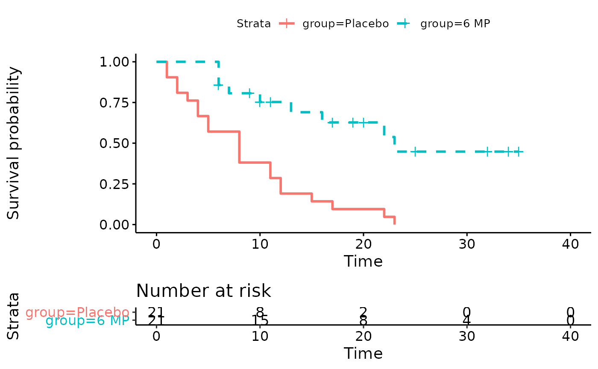
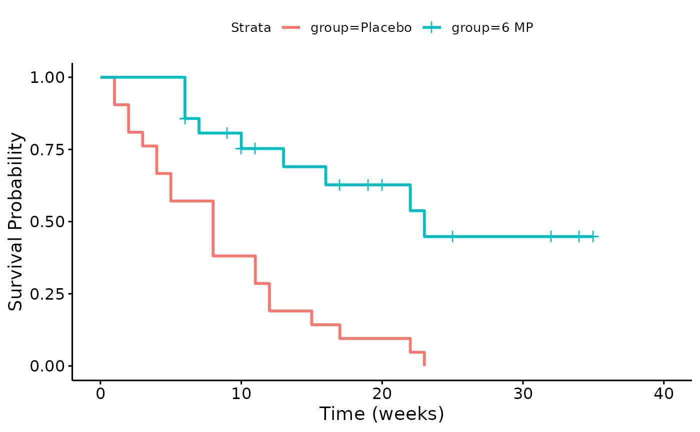
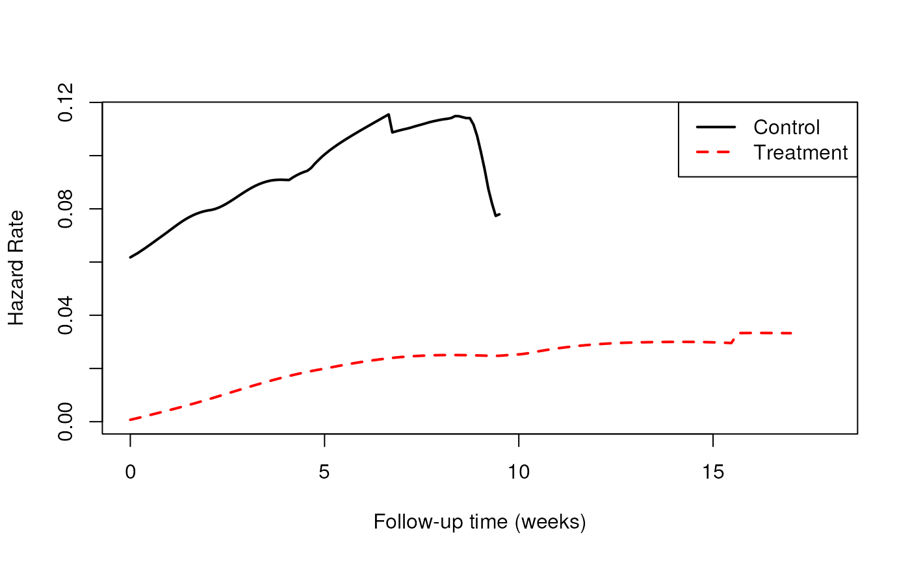

Session 7: Survival Analysis 2
Levi Waldron
Source:vignettes/session_lecture.Rmd
session_lecture.RmdLearning objectives and outline
Learning objectives
- Define proportional hazards
- Perform and interpret Cox proportional hazards regression
- Define time-dependent covariates and their use
- Identify the differences between parametric and semi-parametric survival models
- Identify situations when a parametric survival model might be useful
Review of survival and hazard functions
Recall leukemia Example
- Study of 6-mercaptopurine (6-MP) maintenance therapy for children in remission from acute lymphoblastic leukemia (ALL)
- 42 patients achieved remission from induction therapy and were then randomized in equal numbers to 6-MP or placebo.
- Survival time studied was from randomization until relapse.
Leukemia follow-up table
leukemia Follow-up Table
This is the Kaplan-Meier Estimate \(\hat S(t)\) of the Survival function \(S(t)\).
Leukemia Kaplan-Meier plot
## Warning: Vectorized input to `element_text()` is not officially supported.
## Results may be unexpected or may change in future versions of ggplot2.
The hazard function h(t)
Definition: The survival function at time t, denoted \(S(t)\), is the probability of being event-free at t. Equivalently, it is the probability that the survival time is greater than t.
Definition: The cumulative event function at time t, denoted \(F(t)\), is the probability that the event has occurred by time t, or equivalently, the probability that the survival time is less than or equal to t. \(F(t) = 1-S(t)\).
-
Definition: The hazard function \(h(t)\) is the short-term event rate for subjects who have not yet experienced an event.
- \(h(t)\) is the probability of an event in the time interval \([t, t+s]\) (s is small), given that the individual has survived up to time t \[h(t) = \lim_{s \to 0} \frac{Pr(t \leq T < t+s | T \ge t)}{s}\]
The Hazard Ratio (HR)
- If we are comparing the hazards of a control and a treatment group, it could in general be a function of time:
- \(HR(t) = h_T(t) / h_C(t)\)
- Interpretation: the risk of event for the treatment group compared to the control group, as a function of time
The Proportional Hazards Assumption
Definition: Under the proportional hazards assumption, the hazard ratio does not vary with time. That is, \(HR(t) \equiv HR\).
-
In other words, \(HR\) does not vary with time
- \(HR(t)\) is a constant, \(HR\), at all times t
- this assumption is about the population, of course there will be sampling variation

The hazard function h(t) (leukemia dataset)

## `summarise()` ungrouping output (override with `.groups` argument)## # A tibble: 2 x 2
## group haz
## <fct> <list>
## 1 Placebo <muhaz>
## 2 6 MP <muhaz>
Recall previous regression models
\[ E[y_i|x_i] = \beta_0 + \beta_1 x_{1i} + \beta_2 x_{2i} + ... + \beta_p x_{pi} \]
- \(x_p\) are the predictors or independent variables
- \(y\) is the outcome, response, or dependent variable
- \(E[y|x]\) is the expected value of \(y\) given \(x\)
- \(\beta_p\) are the regression coefficients
For logistic regression: \[ Logit(P(x_i)) = log \left( \frac{P(x_i)}{1-P(x_i)} \right) = \beta_0 + \beta_1 x_{1i} + \beta_2 x_{2i} + ... + \beta_p x_{pi} \]
For log-linear regression: \[ log(E[y_i|x_i]) = \beta_0 + \beta_1 x_{1i} + \beta_2 x_{2i} + ... + \beta_p x_{pi} \]
Cox proportional hazards model
Cox proportional hazards model
- Cox proportional hazards regression assesses relationship between a right-censored, time-to-event outcome and predictors:
- categorical variables (e.g., treatment groups)
- continuous variables \[ log(HR(x_i)) = log \frac{h(t|x_i)}{h_0(t)} = \beta_0 + \beta_1 x_{1i} + \beta_2 x_{2i} + ... + \beta_p x_{pi} \]
- \(HR(x_i)\) is the hazard of patient \(i\) relative to baseline
- \(h(t|x_i)\) is the time-dependent hazard function \(h(t)\) for patient \(i\)
- \(h_0(t)\) is the baseline hazard function
Multiplicative or additive model?
Interpretation of coefficients
- Coefficients \(\beta\) for a categorical / binary predictor:
- \(\beta\) is the \(log\) of the ratio of hazards for the comparison group relative to reference group (\(log(HR)\))
- Coefficients \(\beta\) for a continuous predictor:
- \(\beta\) is the \(log\) of the ratio of hazards for someone having a one unit higher value of \(x\) (1 year, 1mm Hg, etc)
- If the hazard ratio (\(exp(\beta)\)) is close to 1 then the predictor does not affect survival
- If the hazard ratio is less than 1 then the predictor is protective (associated with improved survival)
- If the hazard ratio is greater than 1 then the predictor is associated with increased risk (= decreased survival)
Hypothesis testing and CIs
- Wald Test or Likelihood Ratio Test for coefficients
- \(H_0: \beta=0, H_a: \beta \neq 0\)
- equivalent to \(H_0: HR=1, H_a: HR \neq 1\)
- CIs typically obtained from Wald Test, reported for \(HR\)
Cox PH regression for Leukemia dataset
## Call:
## coxph(formula = Surv(time, cens) ~ group, data = leuk)
##
## n= 42, number of events= 30
##
## coef exp(coef) se(coef) z Pr(>|z|)
## group6 MP -1.5721 0.2076 0.4124 -3.812 0.000138 ***
## ---
## Signif. codes: 0 '***' 0.001 '**' 0.01 '*' 0.05 '.' 0.1 ' ' 1
##
## exp(coef) exp(-coef) lower .95 upper .95
## group6 MP 0.2076 4.817 0.09251 0.4659
##
## Concordance= 0.69 (se = 0.041 )
## Likelihood ratio test= 16.35 on 1 df, p=5e-05
## Wald test = 14.53 on 1 df, p=1e-04
## Score (logrank) test = 17.25 on 1 df, p=3e-05Cox PH is a semi-parametric model
- Cox proportional hazards model is semi-parametric:
- assumes proportional hazards (PH), but no assumption on \(h_0(t)\)
- robust if PH assumption is not violated
- time-dependent covariates may resolve apparent violations of the PH assumption.
Summary: proportional hazards assumption
- Constant hazard ratio between groups over time (proportional hazards)
- A linear association between the natural log of the relative hazard and the predictors (log-linearity)
- A multiplicative relationship between the predictors and the hazard
- Uninformative censoring
What to do when proportional hazards doesn’t hold?
- Time-dependent covariates
- Definition: A time-dependent covariate is a predictor whose values may vary with time.
-
Basic rule: You cannot look into the future in your analysis (even though it took place in the past) E.g.:
- breast cancer chemotherapy patients divided into groups based on how much of the planned dose they received
- patients divided into groups based on early response to treatment (shrinkage of tumor, lowering of cholesterol, etc)
- interpolation of the values of a laboratory test linearly between observation times
- removing subjects who do not finish the treatment plan
- imputing the date of an adverse event as midway between observation times
Source: Using Time Dependent Covariates and Time Dependent Coefficients in the Cox Model
Immortal time bias example
- Immortal time bias is an example of looking into the future.
- E.g. Yee et al. reported that new statin users reported a 26% reduction in the risk of diabetes progression with one year or more of treatment relative to never-users (adjusted HR 0.74, 95% CI: 0.56 to 0.97).
- New users excludes those who had received a lipid lowering drug from three years before to six months after cohort entry
- HR>1 was expected:people whose diabetes progresses are more likely to develop cardiovascular disease, an indication for statins.
- This is a result of an analysis error. Why?
- Yee et al. Statin use in type 2 diabetes mellitus is associated with a delay in starting insulin (http://onlinelibrary.wiley.com/doi/10.1111/j.1464-5491.2004.01263.x/full)
Immortal time bias example (cont’d)
- What was the analysis error?
- “new statin user” group was defined based on future initiation: knowledge unknown at the time of entry into the study
- guaranteed no events for statin users from cohort entry to start of statin use
- thus all persons in the treated group are “immortal” from time 0 until the initiation of statin treatment
- this period of immortality made treatment look more effective
Parametric survival models
What are “parametric” survival models?
- “Parametric” models estimate additional parameters for the baseline hazard, e.g.:
- Weibull: hazard function is a polynomial
- exponential: hazard function is constant over time, survival function is exponential (special case of Weibull): e.g. healthy population with randomly occurring events
- many other options for assumption of distributions
- In most common implementation a log-transform of the time variable is used
- then can be interpreted as Accelerated Failure Time (AFT) models.
Coefficients in parametric models
- The interpretation of \(\beta\) coefficients is different:
- Cox model: \(log(HR)\)
- AFT models: \(log(survival time ratio)\)
- The sign is opposite (i.e. if one is positive the other is negative)
Why use a parametric survival model?
- Can be more powerful if assumption is correct
- may help with small numbers of events
- Extra capabilities:
- smooth estimation of baseline hazard
- extrapolation
- complicated censoring
- Easy to interpret: coefficients are \(log(survival time ratio)\)
- Easy to fit: replace
survival::coxphwithsurvival::survreg